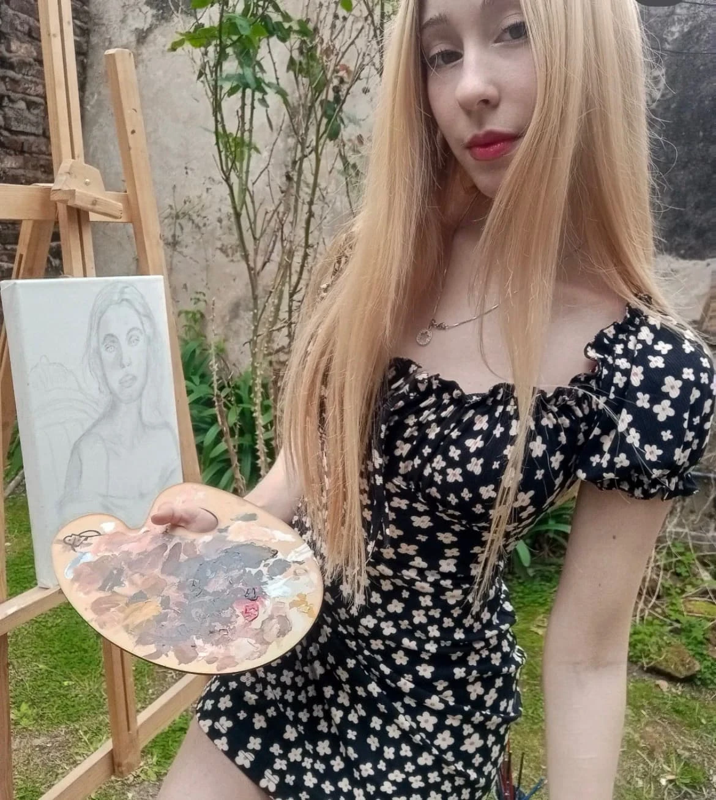
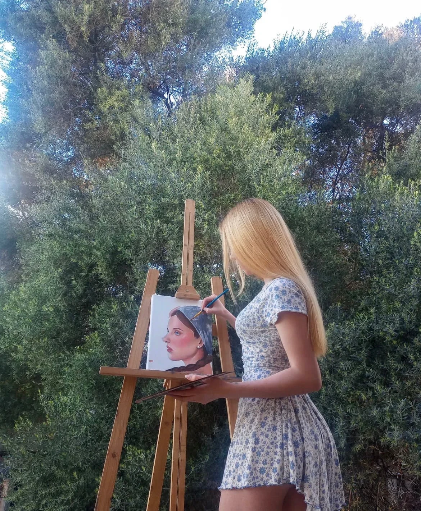
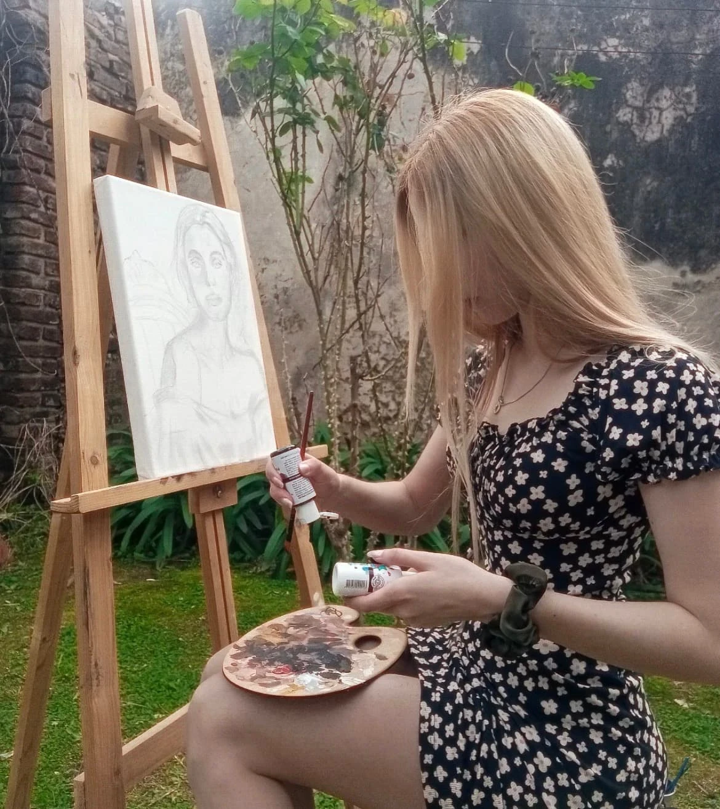
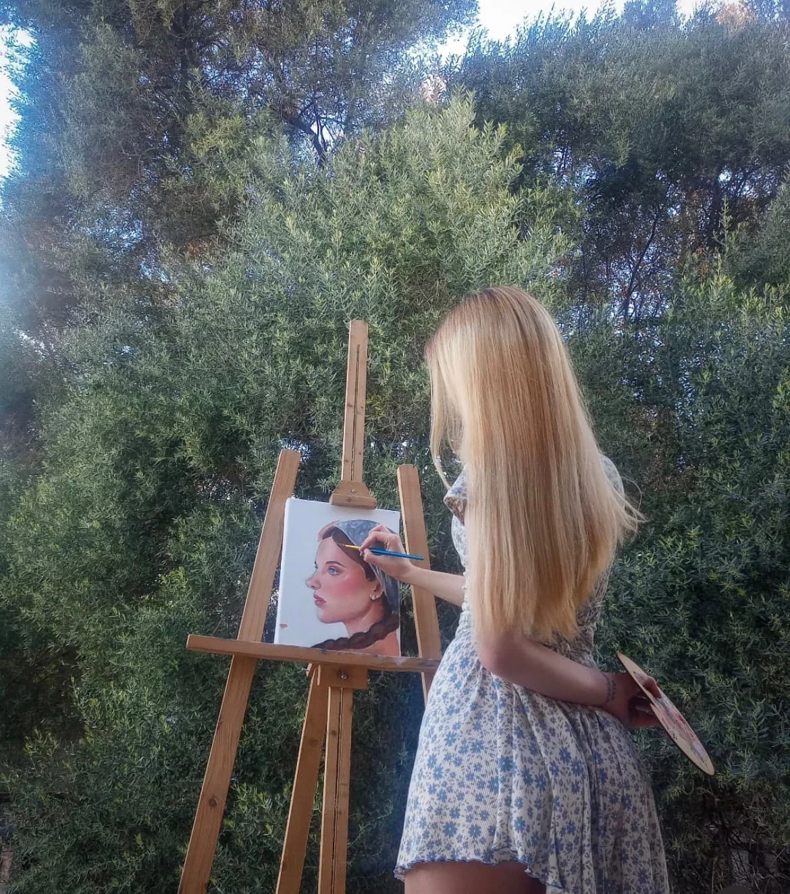
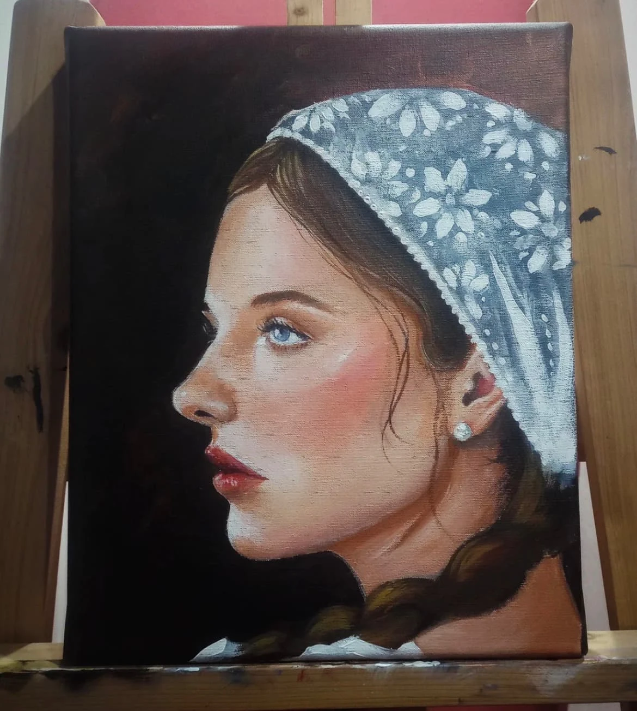
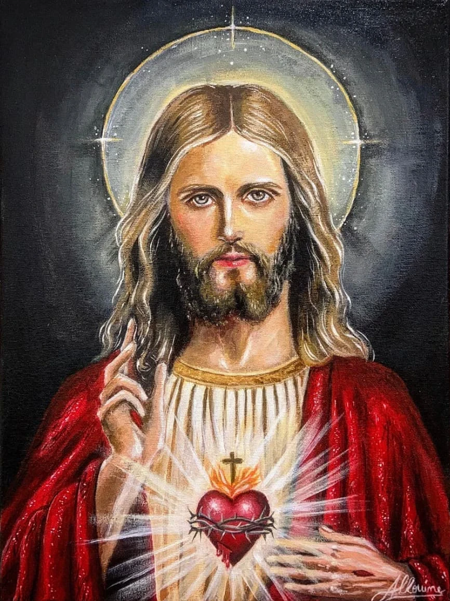

Soy Mili, pintora de Buenos Aires. Pinto en casa y en el jardín, entre plantas y luz de tarde. Retratos, imágenes sacras, bosques y mundos de fantasía, uno por uno, con tiempo y con las manos. Cada lienzo se entrega montado en bastidor, listo para colgar.
«Todo lo hizo hermoso en su tiempo.» — Eclesiastés 3:11
miliart.__

Tocá cualquier cuadro para verlo en grande, con su ficha y su precio.
Del boceto a lápiz a la última capa de color.



Trabajo por encargo a partir de una foto: una persona querida, una mascota, un paisaje, o una imagen sagrada para tu casa. Contame la idea y el tamaño, y te paso el precio y el plazo. Envíos a todo el país y al exterior.
Escribime